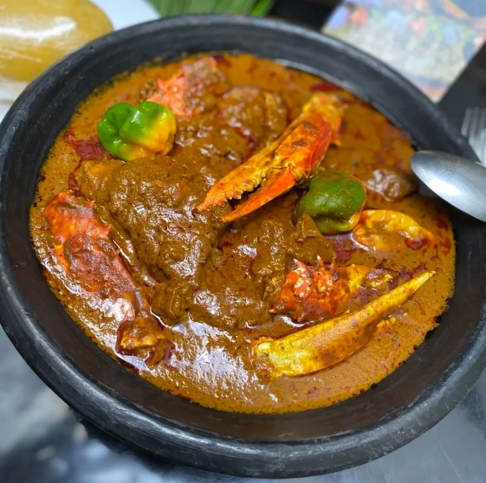
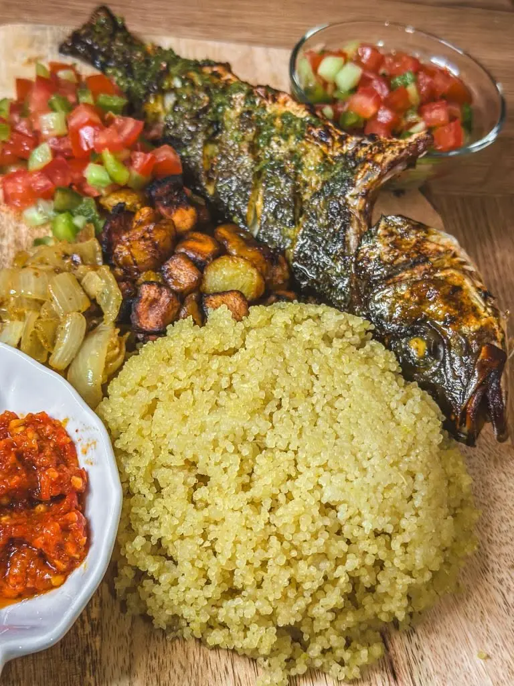
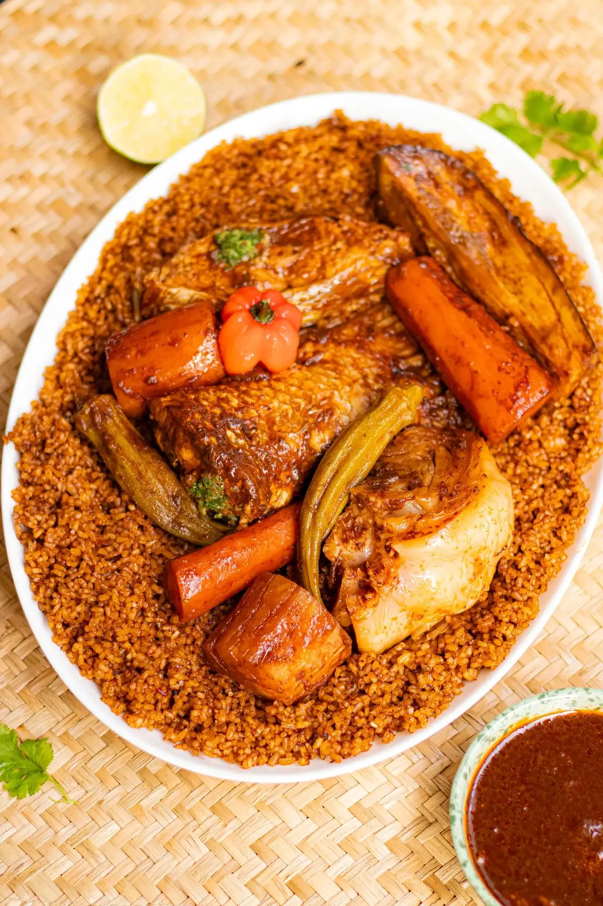

▶AfriDélices
Nos vidéos culinaires
Des démonstrations pour découvrir les gestes et les préparations africaines.
Les cartes sont prêtes à recevoir les liens vidéo officiels. Aucun lien vidéo n’a été inventé.

▶Attiéké poisson : recette facile

▶